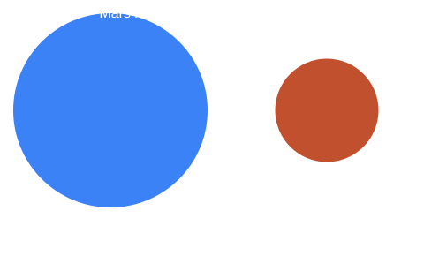

Mars Facts
- Diameter: 6,779 km.
- Distance from the Sun: about 227.9 million km.
- One year: 687 Earth days.
- One day: about 24 hours 37 minutes.
- Average temperature: about -63 °C.
- Moons: 2 (Phobos and Deimos).
- Olympus Mons is about 22 km tall, the tallest volcano known.
Read More: Exploring Mars
Robots are exploring Mars right now.
NASA has sent several rovers to Mars, including Spirit, Opportunity, Curiosity and Perseverance. They study rocks, take photos and look for signs of ancient life. Mars shows dry river beds and lake basins, so scientists think it once had flowing water.
How Big Is It?
